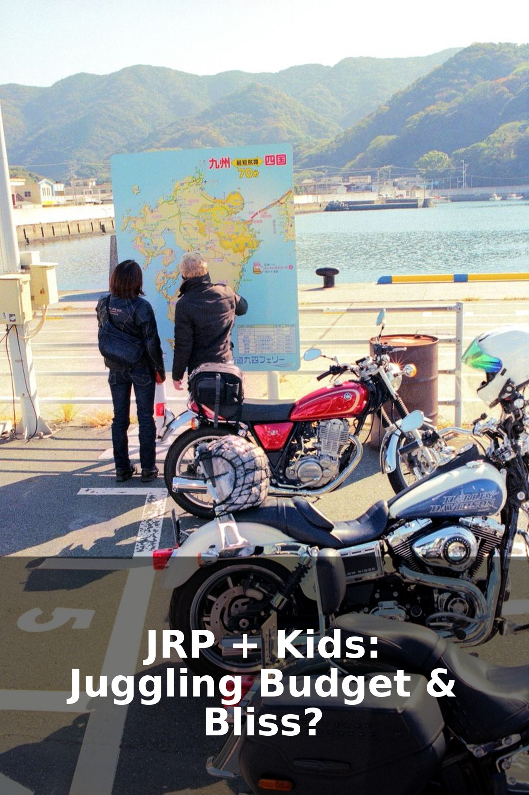

Japan Rail Pass with Kids: Is It Worth It for Families?

Photo by Hugo Sykes on Pexels
Navigating Japan with Little Ones: The JR Pass Question
Planning a family trip to Japan is incredibly exciting, and the Japan Rail Pass (JR Pass) often comes up as a key consideration for getting around. As a parent who's navigated Japan's fantastic train system with my own kids, I know the dilemma: is this iconic pass truly worth it when you're juggling strollers, snacks, and tiny travelers? The honest answer, like most things in family travel, is: it depends on your unique family and itinerary.
Let's break down whether the JR Pass makes sense for your family adventure, especially with the recent price changes.
Understanding the Japan Rail Pass for Families
The JR Pass offers unlimited travel on most Japan Railways (JR) lines, including the famous Shinkansen (bullet trains), some JR buses, and ferries (like to Miyajima). It's designed for foreign tourists and typically comes in 7, 14, or 21-day increments. There are two main classes: Ordinary Car and Green Car (first class).
- Child Pricing: Kids aged 6 to 11 years old travel at half the adult price. Children under 6 travel FREE, provided they don't occupy their own seat. If you need a separate seat for a baby or toddler, you'd need to purchase a child's pass for them.
- Recent Price Changes: As of October 2023, JR Pass prices significantly increased. This makes careful calculation even more crucial for families.
When the JR Pass *Might* Be Worth It for Your Family
For some families, the JR Pass can still be a fantastic option, offering convenience and potential savings:
- Extensive Travel Itinerary: If your family plans to visit multiple distant cities like Tokyo, Kyoto, Hiroshima, Osaka, and perhaps Kanazawa or Hakone within a 7, 14, or 21-day period, the costs of individual Shinkansen tickets can quickly add up. A round trip from Tokyo to Kyoto alone covers a significant portion of the pass cost.
- Frequent Long-Distance Journeys: Beyond the big cities, if your itinerary includes several day trips from your base (e.g., from Kyoto to Nara, or from Tokyo to Nikko), the pass can offer great value for these additional JR routes.
- Older Kids/Teens: With kids aged 12 and up paying adult fares, the cumulative cost of individual tickets can climb steeply, making the pass more appealing for families with teens.
- Peace of Mind: Not having to buy individual tickets for each journey, especially with kids in tow, can be a huge stress reliever. You just show your pass and go (or reserve seats easily).
When the JR Pass *Might NOT* Be Worth It for Your Family
With the new pricing, many families will find that individual tickets or regional passes are a better fit:
- Shorter Trips/Fewer Destinations: If your family is focusing on just one or two major cities (e.g., only Tokyo and Kyoto for a week), it's highly unlikely the pass will pay off. Calculate the individual ticket costs for your planned routes.
- Mostly Local Travel: The JR Pass covers JR lines, but not all private railways or subway lines within cities like Tokyo or Kyoto. You'll still need an IC card (like Suica or Pasmo) for these local transport options, so if your itinerary is heavy on city exploration, the pass won't cover much.
- Families with Very Young Children: If your children under 6 don't require their own seat and can comfortably sit on your lap, they travel free. This significantly reduces the cost of individual tickets for your family, often making the pass less economical.
- Slow Travel or One Base: If your family prefers to settle in one region for an extended period and do only short day trips, a regional pass (like the Kansai Wide Area Pass or Tokyo Wide Pass) or individual tickets will almost certainly be cheaper.
Alternatives to Consider
Don't fret if the JR Pass isn't the perfect fit! Japan has excellent alternatives:
- Individual Tickets: Purchase Shinkansen and local train tickets as you go. For families, reserving seats is always recommended, and you can do this at JR ticket offices.
- Regional Passes: These passes are often much more economical if you're exploring a specific area in depth. Research passes like the JR Kansai Area Pass, JR Tokyo Wide Pass, or Hokuriku Arch Pass depending on your itinerary.
- IC Cards (Suica/Pasmo): Essential for urban travel, these rechargeable cards simplify payment for subways, private railways, and even some buses and convenience stores. Get one for everyone over 6.
Practical Tips for Train Travel with Kids
- Reserve Seats: Always reserve seats on the Shinkansen, especially with kids. It's usually free with the JR Pass and ensures you sit together. Look for seats with extra legroom or near restrooms if available.
- Luggage: Shinkansen luggage space can be limited. Consider using a luggage forwarding service (Takuhaibin) between major hotels to send larger bags ahead, so you only travel with smaller daypacks.
- Snacks and Entertainment: Stock up on snacks and drinks before boarding. Pack small toys, books, or tablets to keep kids entertained during longer journeys.
- Strollers: A compact, foldable stroller is your best friend. Many stations have elevators, but be prepared for stairs too.
Making the Decision: Do the Math!
Ultimately, the best way to determine if the JR Pass is worth it for your family is to map out your exact itinerary. Calculate the individual cost of each major train journey you plan to take. Compare that total against the cost of the appropriate JR Pass. Remember to factor in the flexibility vs. the upfront cost. Happy travels with your little adventurers in Japan!
This guide may contain affiliate links. If you book or buy through them, we may earn a small commission at no extra cost to you. As an Amazon Associate we earn from qualifying purchases. We only recommend things we believe genuinely help your family's trip.